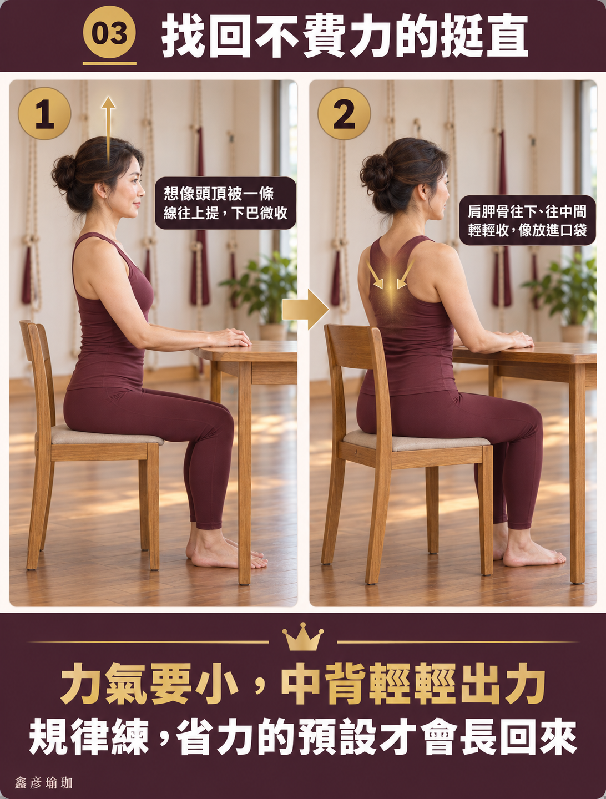

為什麼「抬頭挺胸」撐不過三分鐘？
- 刻意抬頭挺胸撐不久，不是你意志力不夠，而是大腦錯用了易疲勞的「表層運動肌（豎脊肌、上斜方肌）」在硬撐。
- 胸椎卡死時強行挺胸，身體會用「腰椎超伸」與「肋骨外翻」代償，反而引發下背腰痠與假性小腹突出。
- 真正省力的挺直來自「骨盆坐骨垂直扎根」與「深層耐久姿勢肌（下斜方肌、前鋸肌、深頸屈肌）」的靜態支撐。
- 壁繩瑜伽透過懸掛減壓先解開前胸鎖定，再利用牆面支點喚醒沉睡的中下背肌肉，讓挺拔成為身體自然的預設模式。
很多人都有過類似的沮喪經驗：在辦公室盯著螢幕，猛然驚覺自己整個人縮成一隻煮熟的蝦子，於是立刻深吸一口氣，用力把肩膀往後拉、胸口往前頂、背死命夾緊。然而，這種充滿儀式感的「抬頭挺胸」通常維持不到三分鐘，後背就開始痠痛僵硬，呼吸變得急促短淺，最後只能無奈地再次塌回駝背的原點。許多人因此苛責自己「意志力不足」或「核心太弱」；但從人體運動生理學的角度來看，靠意志力硬挺胸，從第一秒開始就注定會失敗。
肌肉生理學真相：運動肌 vs 姿勢肌的致命錯位
人體的骨骼肌依據肌纖維特性與神經支配，大致可分為兩大陣營：

| 比較項目 | 表層運動肌（Phasic Muscles） | 深層姿勢肌（Tonic / Postural Muscles） |
|---|---|---|
| 主要肌肉群 | 豎脊肌外側束、上斜方肌、提肩胛肌、胸大肌 | 多裂肌、旋轉肌群、前鋸肌、下斜方肌、深頸屈肌 |
| 主要纖維類型 | 快縮肌纖維（Type II），微血管密度低 | 慢縮肌纖維（Type I），富含肌紅蛋白與粒線體 |
| 力學生理任務 | 負責瞬間爆發力、關節大範圍主動位移（如搬重物、跑步） | 負責全天 24 小時抗衡地心引力、維持微小關節對位穩定 |
| 耐疲勞能力 | 極低（連續強烈收縮 2 至 3 分鐘即陷入乳酸堆積缺氧） | 極高（能以低功率、低能耗、安靜無聲地長時間工作） |
| 硬挺胸時的角色 | 被錯誤徵召代償硬撐，導致幾分鐘後疲累垮掉 | 因長年久坐被神經抑制、處於睡眠離線狀態 |
當你下意識用力「挺胸、夾背」時，你其實是命令負責搬重物的「搬運工人（豎脊肌與上斜方肌）」，去充當需要站立一整天的「警衛哨兵（深層多裂肌與下斜方肌）」。搬運工人力氣大但耐力極差，撐不到三分鐘自然筋疲力竭，大腦只能強迫身體放鬆塌陷，這完全是生物力學的必然結果。
致命代償：胸椎卡死下的「腰椎超伸」與「肋骨外翻」
為什麼多數人無法自然挺起胸口？最根本的物理障礙在於「胸椎（Thoracic Spine）活動度喪失」。
正常人體的胸椎原本就有輕微的後凸弧度（約 20 至 40 度），並與 12 對肋骨構成保護心肺的胸廓牢籠。長年伏案打字讓胸椎關節囊硬化、肋間肌群緊縮，使胸椎像被水泥封死一樣失去了向後伸展（Extension）的能力。
此時若大腦強硬下達「把胸口挺起來」的死命令，身體為了完成任務，只能繞道向活動度最大的下背求救：
- 腰椎過度前凸（Lumbar Hyperlordosis）：胸椎動不了，腰椎便硬生生往前凹陷下折，將所有上半身重量硬砸在第 4、第 5 腰椎與薦椎小面關節上，引發頑固性下背痠痛。
- 肋骨外翻（Rib Flare）：為了假裝胸口打開，前方下緣肋骨被硬往前推開翻起，導致核心腹橫肌與橫膈膜失去對合（Zone of Apposition, ZOA），造成呼吸短淺與小腹向前鬆弛突出。
挺直的真正地基：骨盆與坐骨結節垂直扎根
脊椎就像疊疊樂積木，最底層的基石是骨盆。如果你坐在一張椅子上，骨盆向後傾斜倒塌（坐骨滑到前方，變成尾椎與骶骨受力），整條脊椎的重力線就會向後滑落，上背與脖子為了維持視線水平，必然會反射性向前彎曲駝背——此時在上半身做任何挺胸練習，都只是在斜塔頂端做無用功。

今天就能做的微調練習：天頂牽引與坐骨歸位
想要建立不費力的挺直預設，試著拋棄「用力夾背」的舊觀念，改用神經意念微調法：
- 坐骨垂直扎根：坐下時雙腳平踩地面與髖同寬，雙手伸到臀部下方，摸到左右兩塊硬硬的骨頭（坐骨結節），稍微將臀肉往後撥，讓坐骨像兩根柱子穩穩垂直插在椅面上。
- 天頂牽引意念：閉上雙眼，想像頭頂百會穴有一根隱形的絲線，溫柔且堅定地垂直朝向天花板向上微拉，帶動頸椎一節一節自然抽高延展。
- 下巴水平微收（Chin Tuck）：保持平視視線，後腦勺像輕靠在椅背上一樣，往後平移一公分，啟動沉睡的深層頸屈肌，讓頭顱重心穩穩落在頸椎中立軸上。
- 肩胛自然沉落：雙肩先輕輕往耳朵聳起吸氣，吐氣時讓兩側肩胛骨像融化的奶油一樣，順著後背肋骨滑落到下方，中背保持微小的安靜穩定，胸廓自然放鬆呼吸。
壁繩瑜伽如何重塑「不費力的挺拔」？
在地面練習時，重力會不斷將失去支撐的身體向下壓迫；而在壁繩瑜伽（Wall Rope Yoga）教室中，牆面與專用繩帶為身體創造了神奇的「無重力懸掛支撐」：
- 解除前胸肌筋膜的緊密鎖定：透過骨盆帶與胸帶的懸掛牽引，在完全不需要下背肌肉出力的安全保護下，溫和延展長期縮短的胸大肌、胸小肌與前鋸肌，重新打開深層胸椎關節腔。
- 精準定位沉睡的姿勢肌群：牆壁與繩結提供了極度清晰的空間座標與本體感覺反饋，讓練習者在老師的當面引導下，明確體會「下斜方肌向下沉、前鋸肌環抱肋骨」的細膩出力感，不再誤用脖子或腰椎硬代償。
何時必須尋求醫療介入？脊椎神經紅旗警訊
若在嘗試坐正、站直或活動背部時出現以下徵兆，請立即就醫進行詳細神經影像檢查：
- 挺直或彎腰時，引發像電擊一般的劇痛沿著臀部往大腿後側、小腿或腳底串流（坐骨神經根壓迫）。
- 雙側下肢麻木、肌力明顯減退，走路時有「踩在棉花上」的不平衡感（胸椎或頸椎脊髓病變警訊）。
- 伴隨大小便控制異常、會陰部感覺麻木（馬尾症候群急症，需 48 小時內緊急手術評估）。
告別死命硬撐，找回身體省力中立軸
總是挺直三分鐘就累垮嗎？預約現場 AI 體態檢測，透過全身力線分析看清骨盆傾斜與胸椎卡死點，由專業老師當面為您解讀合適的調整方向。
預約首次 NT$299 AI 體態檢測本文為體態結構與運動生理學衛教知識分享，並非醫療行為，亦不提供任何醫療診斷或療效承諾。若有劇烈腰背疼痛、神經放射性麻痛、下肢無力或步態不穩，請務必諮詢骨科、神經內外科或復健專科醫師。
常見問題
為什麼刻意抬頭挺胸，總是撐不了三分鐘就垮回原樣？
這絕非意志力薄弱，而是大腦動錯了肌肉系統。刻意挺胸時，多數人下意識徵召的是表層的「運動型肌肉（如豎脊肌、上斜方肌）」，這類肌肉由快縮肌纖維構成，專門應付瞬間爆發動作，極不耐疲勞，用力兩三分鐘便會缺氧痠痛。維持姿勢應由深層耐力型的「姿勢肌（如多裂肌、深頸屈肌、下斜方肌）」負責，深層肌群沉睡未醒，表層肌肉自然無法長久支撐。
死命挺胸為什麼反而容易引發腰痠與肚子凸？
當胸椎長年因久坐而僵硬駝背卡死時，上半身缺乏向上伸展的關節活動度，大腦為了達成「挺胸」指令，便會向下借用活動度較大的腰椎，形成「腰椎過度前凸（Lumbar Hyperlordosis）」與「肋骨外翻（Rib Flare）」。表面看似挺拔，實則將壓力全數壓迫在腰椎小面關節與下背肌肉上，同時腹直肌被過度拉長失去張力，反而讓小腹更加突出。
坐姿要能自然挺直，最關鍵的「骨盆地基」是什麼？
關鍵在於坐骨結節（Ischial Tuberosity）的扎根垂直承重。許多人坐著時骨盆後傾、尾椎受力，脊椎地基如同斜塔塌陷，上背必然代償駝背；正確坐姿應將雙側坐骨穩穩落在椅面上，使骨盆維持中立位，脊椎三道生理彎曲便能如同積木自然向上堆疊，無需刻意緊繃肌肉就能省力維持直立。
壁繩瑜伽如何幫助喚醒沉睡的中下背與深層姿勢肌？
壁繩瑜伽利用繩帶懸掛分擔人體重量，先在無重力壓迫下釋放前胸緊繃縮短的胸大肌與胸小肌，讓向前翻倒的肩胛骨重獲後退空間；接著透過牆面支點提供清晰的本體感覺回饋，引導練習者精準啟動平時找不到開關的菱形肌、前鋸肌與下斜方肌，避免上斜方肌聳肩硬夾代償。
挺胸或調整坐姿時出現哪些症狀，屬於必須就醫的紅旗警訊？
若在嘗試挺直時，下背或臀部突發觸電般的劇烈放射痛直竄小腿與腳趾（椎間盤突出神經根壓迫）；雙腳無力踩地像踩棉花；伴隨會陰部麻木或排尿排便困難失禁（馬尾症候群急症）；或挺胸時伴隨嚴重胸悶壓迫感、冒冷汗，請務必立即前往骨科、神經外科或大醫院急診就醫。